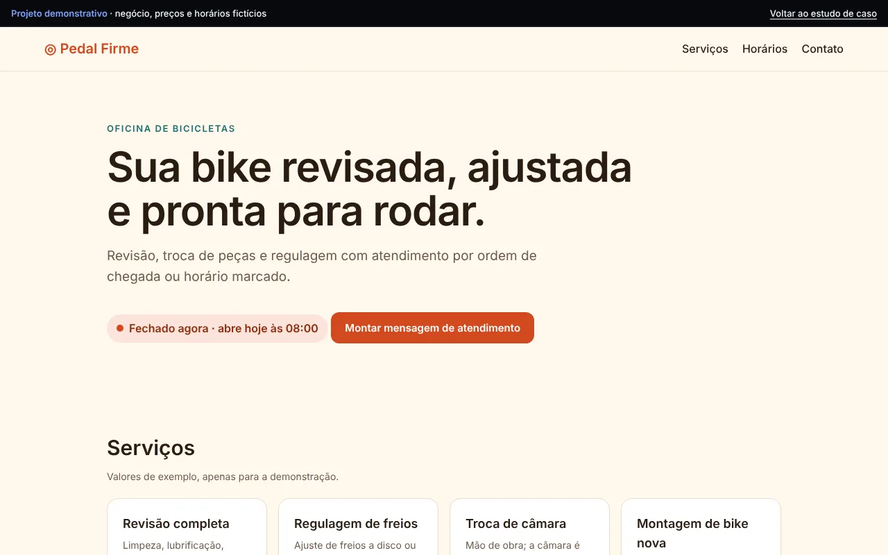

Projeto demonstrativo · Site para negócio local
Pedal Firme
Site de uma oficina de bicicletas fictícia, com status de aberto/fechado em tempo real e mensagem de atendimento pronta.

Objetivo
Mostrar o modelo de site para negócio local: informações essenciais, horários e um caminho curto até o contato.
Problema
Clientes de negócios locais desistem quando não encontram horários, serviços e uma forma rápida de chamar.
Solução
Página única com serviços, tabela de horários destacando o dia atual, indicador de aberto/fechado calculado pelo horário do visitante e um montador de mensagem para o WhatsApp.
Funcionalidades
- Status "aberto agora" ou "abre amanhã às…" calculado em tempo real
- Tabela de horários com o dia atual destacado
- Montador de mensagem com serviço e dia escolhidos
- Cópia da mensagem com um clique
- Layout responsivo e navegação por teclado